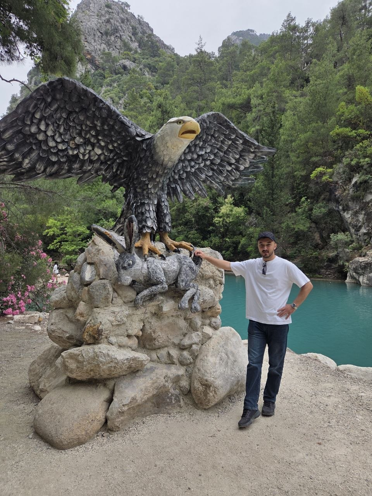

About

LLVM wyvern? Close enough.
I work on GPU compilers and drivers. I like performance problems where the boundary between algorithms, compilers, and hardware gets blurry.
now
Most of my work is around Mesa, LLVM, and Linux DRM.
I’m looking for work on GPU compilers, drivers, or performance engineering.
systems background
My systems background includes NuttX bring-up on RK3588S and TI AM67A. I upstreamed the initial Orange Pi 5 Pro port; at Baykar, I brought up a Cortex-R5F through Linux remoteproc.
background
I grew up online; computers have occupied most of my attention since 2012.
lore
Around 2015, I got into game modding, Minecraft servers, rooting phones, and custom ROMs. I started programming in 2017 and found Codeforces a few years later; I still compete.
From 2019 to 2022, I made Unity games alone and with friends, then moved to OpenGL and Vulkan. Curiosity about how computers work led me to operating systems and architecture; performance led me further down, to compilers and microarchitecture.